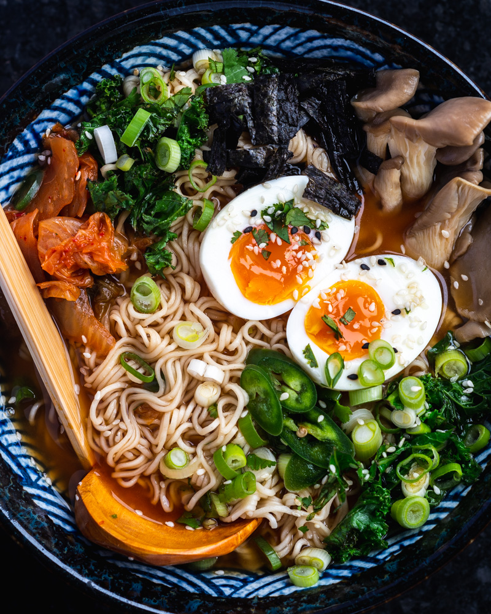

Vegetarian Miso Ramen

This ramen is yum.
And it's easy.
Try it.
Ingredients (1 serve):
Garlic 10g (1 clove)
Ginger 10g
Sesame oil 1 tsp
Miso 1 tsp
Sugar 1 tsp
Chili bean sauce 1/2 tsp
Kombu powder 1 tsp
Soy sauce 1 tbsp
Water 150ml
Soy milk 300m
Method:
Grate garlic and ginger
Add Seame oil to a pot
Add miso to mix
Add the rest to the mix
Cook ramen separately and add ramen to broth